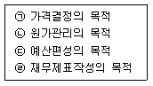
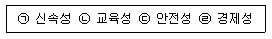
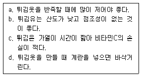

조리산업기사(공통) (2002-08-11 기출문제)
1과목: 식품위생 및 관련법규
1. 자연독 식중독의 원인물질과 독성분이 바르게 연결된 것은?
- 독미나리 - amygdalin
- 청매 - cicutoxin
- 불순 면실유 - gossypol
- 미얀마(버마)콩 - aconitine
(정답률: 93%)

2. 식품으로 인한 위해를 방지하기 위한 방법이 아닌 것은?
- 쥐, 파리, 바퀴 등을 박멸한다.
- 식품취급자는 손을 자주 씻는다.
- 조리직후 식품을 냉장고에 넣는다.
- 냉장하였던 음식은 섭취 전에 충분히 가열한다.
(정답률: 88%)
3. 세균성 식중독의 예방대책으로 적절하지 않는 것은?
- 도마 ㆍ식기류는 항상 청결하게 하며 사용 후 열탕소독한다.
- 식중독 미생물은 식품을 냉동하면 사멸시킬 수 있다.
- 조리 전 ㆍ후의 식품은 반드시 따로 취급해야 한다.
- 식품을 장시간에 걸쳐 실온에 방치하지 않는다.
(정답률: 93%)
4. 단백질의 부패과정에 생성되는 알레르기성 식중독의 원인물질은?
- 암모니아
- 히스티딘
- 히스타민
- 황화수소
(정답률: 68%)
5. 식품접객영업자의 준수사항 중 틀린 것은?
- 유통기한이 경과된 원료를 조리∙판매의 목적으로 보관할 수 있다.
- 출입∙검사 등 기록부는 최종 기재일부터 2년간 보관하여야 한다.
- 동물의 내장을 조리한 경우에는 이에 사용한 기계∙기구류 등을 세척하여 살균하여야 한다.
- 물수건과 식기 등은 식품첨가물인 살균제 또는 열탕의 방법으로 소독한 것을 사용하여야 한다
(정답률: 90%)
6. 조리사로서 종사할 수 없는 질병이 아닌 것은?
- 전염성의 결핵
- 소화기계의 전염병
- 비활동성의 B형 간염
- 피부병 기타 화농성 질환
(정답률: 88%)
7. 보건복지부령이 정하는 위생등급기준에 따라 위생관리상태 등이 우수한 일반음식점에 부여할 수 있는 위생등급은?
- 위생업소
- 우수업소
- 모범업소
- 우량업소
(정답률: 84%)
8. 독성시험 중 반수치사량(LD50)을 구하는 시험은?
- 만성독성시험
- 아만성독성시험
- 급성독성시험
- 최기형성시험
(정답률: 80%)
9. 내열성 세균의 아포(포자)까지 멸균시키기 어려운 가열살균법은?
- 건열 살균법
- 간헐 살균법
- 고압증기 살균법
- 상압증기 살균법
(정답률: 44%)
10. 부패현상을 가장 적절히 설명한 것은?
- 단백질 식품의 혐기적인 분해
- 단백질 식품의 호기적인 분해
- 지방질 식품의 혐기적인 분해
- 지방질 식품의 호기적인 분해
(정답률: 77%)
11. 화학적 소독제에 해당되지 않는 것은?
- 알콜
- 자외선
- 크레졸
- 페놀
(정답률: 90%)
12. 식품으로 인한 중독을 일으킨 환자를 진단한 의사나 한의사는 누구에게 보고하여야 하는가?
- 보건소장
- 시도지사
- 시장∙군수∙구청장
- 식품의약품안전청장
(정답률: 51%)
13. 병원성대장균에 관한 설명으로 틀린 것은?
- 장내 상재하는 정상 대장균과는 달리 사람에게서 병원성을 나타내는 외래성 대장균이다.
- 원인식품은 균이 증식된 모든 식품이 될 수 있다.
- 감염원은 환자, 보균자, 동물의 배설물 및 오염된 식품이다.
- 주 증상은 두통, 시신경이상, 사지마비, 호흡곤란이다.
(정답률: 66%)
14. 조개류 중독의 원인이 되는 성분은?
- 베네루핀(venerupin)
- 사포게닌(sapogenin)
- 아트로핀(atropine)
- 무스카린(muscarine)
(정답률: 92%)
15. 다음 중 대장균 검사의 추정시험에 사용하는 배지는?
- EMB 배지
- LB 배지
- BGLB 배지
- SS 배지
(정답률: 74%)
16. 인체에 흡수되어 Choline esterase를 저해하는 농약류는?
- DDT
- parathion
- BHC
- dieldrin
(정답률: 60%)
17. 역성비누의 용도 중 가장 옳은 것은?
- 조리기구의 소독
- 음료수 소독
- 채소, 과실 세척
- 육류 세척
(정답률: 78%)
18. 조리사의 면허는 누구에게 받아야 하는가?
- 보건복지부 장관
- 시∙도 지사
- 구청장 및 군수
- 한국산업인력공단 이사장
(정답률: 54%)
19. 집단 급식소는 상시 1회 몇 인 이상에게 식사를 제공하는 곳인가?
- 30인
- 50인
- 80인
- 100인
(정답률: 86%)
20. 식품위생 행정의 구체적인 시책이 아닌 것은?
- 표시제도의 실시
- 제품허가제도의 실시
- 조리사와 영양사 제도의 실시
- 식중독의 예방과 발생시의 조치
(정답률: 41%)
2과목: 식품학
21. 저칼로리용 식이 섬유의 가공에 흔히 이용되는 식물성 재료가 아닌 것은?
- 밀기울
- 비지
- 해조류
- 백미
(정답률: 79%)
22. 지방의 가공처리 방법이 아닌 것은?
- 동유처리방법(Winterization)
- 수소첨가반응(Hydrogenation)
- 에스테르교환방법(Esterification)
- 중합반응방법(Polymerization)
(정답률: 58%)
23. 어육의 자기 소화의 원인은?
- 공기 중의 산소에 의해 일어난다.
- 어육 내에 존재하는 염류에 의해 일어난다.
- 어육 내에 존재하는 유기산에 의해 일어난다.
- 어육 내에 존재하는 효소에 의해 일어난다.
(정답률: 74%)
24. 식품과 단백질의 연결이 적당한 것은?
- 쌀 - 아비딘(avidin)
- 콩 - 카제인(casein)
- 밀 - 글루테닌(glutenin)
- 우유 - 글리시닌(glycinin)
(정답률: 74%)
25. 다음 가공 식품 중 원료가 다른 식품은?
- 두부
- 전분
- 물엿
- 당면
(정답률: 82%)
26. 채소류와 가식부위와의 연결이 바르게 된 것은?
- 연근 -꽃눈
- 양배추 -구상줄기
- 죽순 - 어린 줄기, 싹
- 곤약 - 잎
(정답률: 83%)
27. 고지혈증의 식사지침으로 옳은 것은?
- 콜레스테롤(cholesterol) 섭취를 하루 1g 이하로 줄인다.
- 다가불포화지방산:단일불포화지방산:포화지방산의 섭취비율이 1 :1-1.5 :2가 되도록 한다.
- 총 에너지 섭취의 20%를 지방으로 섭취한다.
- 다당류, 설탕, 사탕 등의 당질섭취를 줄인다.
(정답률: 60%)
28. 티아미나제(thiaminase)와 관계가 먼 것은?
- 비타민 B1 분해효소
- 당근, 오이 등에 다량 포함
- 마늘의 알리신과 결합한 비타민 B1은 안정적임
- 가열에 의해 활성이 상실됨
(정답률: 58%)
29. 해조류의 설명으로 옳은 것은?
- 김은 녹조류에 속한다.
- 다시마는 일년생의 얇고 부드러운 것이 좋다.
- 미역에는 요오드와 당질은 풍부하나, 단백질의 함량은 거의 없다.
- 한천(agar)와 캐러기난(carrageenan)은 홍조류에서 얻어지고 알긴산염(alginate)은 갈조류에서 얻어진다.
(정답률: 58%)
30. 25%의 수분과 10%의 설탕을 함유하고 있는 식품의 수분활성도는? (물의 분자량은 18이고, 설탕의 분자량은 342이다.)
- 0.98
- 0.93
- 0.88
- 0.83
(정답률: 40%)
31. 다음 필수 아미노산 중 황 함유 아미노산은?
- 루이신(leucine)
- 트립토판(tryptophan)
- 페닐알라닌(phenylalanine)
- 메티오닌(methionine)
(정답률: 43%)
32. 다음 정미성분 중 잘못 짝지어진 것은?
- 고추 - capsaicin
- 생강 - gingerol
- 파 - diallyl sulfide
- 계피 - sanshool
(정답률: 73%)
33. 단백질의 등전점에 대한 설명으로 적당한 것은?
- 분자내 양전하와 음전하가 상쇄되어 실제전하가 "0"이 될 때의 용해도
- 분자내 양전하와 음전하가 상쇄되어 실제전하가 "0"이 될 때의 삼투압
- 분자내 양전하와 음전하가 상쇄되어 실제전하가 "0"이 될 때의 점도
- 분자내 양전하와 음전하가 상쇄되어 실제전하가 "0"이 될 때의 pH
(정답률: 64%)
34. 아미노 카르보닐(amino-carbonyl) 반응에 대한 설명 중 틀린 것은?
- 초기단계에서는 질소배당체가 형성되며 무색을 나타낸다.
- 중간단계에서는 osone, HMF 등이 생성된다.
- 온도가 높아질수록 반응속도는 급속도로 증가한다.
- pH가 높을수록 갈변속도가 느리다.
(정답률: 73%)
35. Soft형 마가린이 Hard형 마가린에 비하여 융점이 낮은 이유는?
- 유화제 첨가량이 많다.
- 안정제를 첨가했다.
- 항산화제를 첨가했다.
- 불포화지방산 함량이 많다.
(정답률: 65%)
36. 렌닌(rennin)에 의해 우유 단백질이 응고될 때 작용하는 이온은?
- Fe2+
- Ca2+
- Mg2+
- Na+
(정답률: 78%)
37. 붓꽃의 일종으로 아시아가 원산지이나 스페인, 프랑스, 이탈리아, 남아프리카에서도 자라며, 가을에 먼저 피어나는 꽃 중 붉은 부분만을 골라 생산하게 되는데 맛은 씁쓸하고 약간의 단맛을 가지며, 주로 색을 내기 위해 사용되는 식재료는?
- 아스파라거스(Asparagus)
- 사프란(Saffran)
- 엔다이브(Endives)
- 비트(Beet)
(정답률: 80%)
38. 에르고스테롤(ergosterol)은 다음 어디에 속하는가?
- provitamin A
- provitamin B
- provitamin D
- provitamin E
(정답률: 58%)
39. 우리몸 속에서 수분의 작용에 대한 설명으로 틀린 것은?
- 체내대사작용에 관여한다.
- 체온조절에 관여한다.
- 영양소를 운반한다.
- 우리가 섭취한 5대 영양소 중 하나이다.
(정답률: 86%)
40. 유체의 흐름에 대한 저항을 의미하는 물성 용어는?
- 점성(viscosity)
- 탄성(elasticity)
- 소성(plasticity)
- 점탄성(viscoelasticity)
(정답률: 72%)
3과목: 조리이론 및 급식관리
41. 시간의 변동에 따라 물가가 인상되는 상황에서 재고가를 높게 책정하고 싶을 때 사용할 수 있는 방법은?
- 최종구매가법
- LIFO법
- FIFO법
- 총평균값
(정답률: 58%)
42. 주방 레이아웃과 관계없는 것은?
- 작업공간의 확보
- 기기 취급의 경제성
- 건축, 설계와의 관계
- 작업동선과 기계배치
(정답률: 60%)
43. 가격결정방법의 분류 중 수요중심가격에 해당되지 않는 것은?
- 인지된 가치설정법
- 명성가격 설정법
- 관습적가격 설정법
- 단수가격 설정법
(정답률: 51%)
44. 배식대 앞 통로의 규격은?
- 0.5-1.0m
- 1.0-1.5m
- 1.5-2.0m
- 2.0-2.5m
(정답률: 60%)
45. 직화구이를 할 때에 재료와 불 사이의 가장 적당한 거리는?
- 2 ～ 4㎝
- 7 ～ 10㎝
- 15 ～ 19㎝
- 20 ～ 25㎝
(정답률: 75%)
46. 원가계산의 목적을 모두 고른다면?

- ㉠, ㉡
- ㉠, ㉢, ㉣
- ㉠, ㉡ ,㉣
- ㉠, ㉡, ㉢, ㉣
(정답률: 75%)
47. 다음 과실류의 식품감별법으로 옳은 것은?
- 대추 - 과실이 크고 단단하다.
- 잣 - 색이 노랗고 크기가 일정하지 않다.
- 참외 - 과피색이 거의 흰색인 것이 좋다.
- 밤 - 과피의 색이 짙고 윤기가 없다.
(정답률: 81%)
48. 1¼cup의 설탕대신 꿀 1cup을 사용할 경우 줄여야 할 액체양은?
- 1/6Cup
- 1/4Cup
- 1/3Cup
- 1/2Cup
(정답률: 76%)
49. 생배추를 썰 때 풍기는 향긋한 냄새와 관련 없는 항목은?
- 미로시나제(myrosinase)
- 머스터드 오일(mustard oil)
- 시니그린(sinigrin)
- 알린(alliin)
(정답률: 37%)
50. 작업개선의 목표로 짝지어진 것은?

- ㉠, ㉡, ㉣
- ㉠, ㉢, ㉣
- ㉡, ㉢, ㉣
- ㉠, ㉡, ㉢
(정답률: 73%)
51. 튀김을 할 때 주의할 점을 바르게 묶은 것은?

- a, b, c
- b, c, d
- a, c, d
- a, b, d
(정답률: 64%)
52. 메뉴 분석 및 개발 전략으로 잘못된 것은?
- 메뉴품목이 잘 팔리지 않고 이익도 적다 → 판매중지
- 메뉴품목이 이익은 많으나 팔리지 않는다 → 판매가격을 내리던지 재료비를 높인다.
- 메뉴품목이 잘 팔리거나 이익이 적다 → 판매가격을 내리던지 재료비를 올린다.
- 메뉴품목이 잘 팔리며 이익도 많다 → 신상품을 계속 개발한다.
(정답률: 74%)
53. 구매계약 방법 중 수의계약이란?
- 신문, 관보, 게시 등을 이용하여 계약하는 것
- 자격있는 특정인과 단독계약을 체결하는 방법
- 자격있는 자들을 선정하여 경쟁입찰시켜 계약을 체결하는 방법
- 몇몇 업자를 지명하여 계약문건을 제시한 후 맞으면 입찰시키는 방법
(정답률: 66%)
54. 조리규모가 커지면서 오물이 많을 때 주방 바닥청소를 효과적으로 하려면 무엇을 설치해야 하는가?
- 급탕기
- 곡선형 트랩
- 트렌치
- 디스포저
(정답률: 80%)
55. 찹쌀가루, 기장찰가루, 차수수가루에 고운 엿기름가루를 섞어 반죽하여 삭힌 후 번철에 지져 꿀이나 설탕에 재워서 먹는 떡으로 노화방지, 저장성이 매우 좋은 떡은?
- 노티떡
- 무시루떡
- 화전
- 조침떡
(정답률: 64%)
56. 다음 육류의 사후경직시에 일어나는 현상이 아닌 것은?
- 이노신산(inosinic acid)이 생성된다.
- phosphatase가 활성화된다.
- 젖산(lactic acid)이 생성된다.
- ATP가 분해되어 인산이 생성된다.
(정답률: 56%)
57. 어떤 음식을 만드는데 직접재료비 1,450원, 직접 노무비 450원, 직접경비 90원이 들었다. 이 음식의 직접원가는?
- 1,870원
- 1,540원
- 1,900원
- 1,990원
(정답률: 88%)
58. 우유를 가열할 때 피막형성을 방지하는 방법이라고 볼 수 없는 것은?
- 가열팬의 뚜껑을 덮고 한다.
- 우유를 거품 낸다.
- 우유를 희석한다.
- 비효소적 마이야르반응(Maillard reaction)에 의한다.
(정답률: 52%)
59. 쇠고기 부위 중 안심에 대한 설명 중 틀린 것은?
- 쇠고기중에서 가장 부드러우며 최고의 부위이다.
- 국, 찜, 조림 등에 이용하며 오래 가열할수록 맛있다.
- 소 한마리에 약 2% 정도 밖에 얻을 수 없다.
- 안심 중 가장 붉은 부위는 제비추리이다.
(정답률: 80%)
60. 표준조리레시피 작성시 꼭 기록해야 할 것끼리 묶인 것은?
- 재료의 분량, 폐기율, 영양가산출, 조리방법
- 구매장소, 1일배식량, 조리기기, 조리원수
- 식단가, 조리방법, 조리시간, 급식인원
- 식재료모양, 감별법, 배식규정, 구매량
(정답률: 63%)
4과목: 공중보건학
61. 구충구서의 일반적인 원칙이라 할 수 없는 것은?
- 발생초기에 구제
- 성충이 된 후 해충구제
- 발생원 및 서식처 제거
- 광범위하게 동시에 구제
(정답률: 73%)
62. 쓰레기 처리방법 중 매립법의 문제점과 가장 거리가 먼 것은?
- 해충이나 쥐의 발생이 우려된다.
- 수질오염이 우려된다.
- 화재발생이 우려된다.
- 소음진동발생의 민원이 우려된다.
(정답률: 56%)
63. 회충은 농촌에서 분뇨를 비료로 사용 중 감염되는데 성충은 어디서 기생하는가?
- 소장
- 대장
- 십이지장
- 간장
(정답률: 57%)
64. 쇠고기를 불충분하게 익혀 먹고 감염되었다면 의심할 수 있는 기생충은?
- 구충
- 간흡충
- 무구조충
- 유구조충
(정답률: 84%)
65. 망막을 자극하여 명암과 색채를 식별하게 하는 광선은?
- 자외선
- 가시광선
- 적외선
- 중적외선
(정답률: 82%)
66. 부영양화 현상을 초래하는 물질은?
- 염산염
- 황산염
- 질산염
- 크롬산염
(정답률: 61%)
67. 열중증 중 전신권태, 식욕부진 및 두통 등을 호소하는 만성형은?
- 열경련증
- 열허탈증
- 울열증
- 열쇠약증
(정답률: 57%)
68. 면역의 종류 중 질병이환 후 얻어지는 면역은?
- 자연능동면역
- 인공능동면역
- 자연수동면역
- 인공수동면역
(정답률: 68%)
69. 쥐가 매개하는 질병에 속하지 않는 것은?
- 페스트
- 살모넬라증
- 렙토스피라증
- 사상충증
(정답률: 66%)
70. 자연환기가 잘 되기 위한 중성대의 위치는?
- 방바닥 가까이 형성될 때
- 천정 가까이 형성될 때
- 방바닥과 천정의 중간대에 형성될 때
- 방바닥과 천정의 중간대에서 약간 밑으로 형성될 때
(정답률: 70%)
71. 질병의 시간적 특성에 의한 질병발생양상 중 수십년의 기간을 두고 유행을 하는 것은?
- 불규칙변화
- 계절적변화
- 단기적 변화
- 추세변화
(정답률: 70%)
72. 감수성 지수가 가장 높은 전염병은?
- 홍역
- 백일해
- 장티푸스
- 발진티푸스
(정답률: 80%)
73. 매개곤충에 의한 전파양식 중 발육형에 속하는 질병은?
- 말라리아
- 록키산홍반열
- 발진티푸스
- 사상충증
(정답률: 42%)
74. 수질검사에서 과망간산칼륨 소비량을 측정하는 의미는?
- 일반 세균수의 추정
- 대장균군의 추정
- 유기물의 양 추정
- 경도 및 탁도의 추정
(정답률: 58%)
75. 하수처리에서 살수여상법에 대한 설명으로 틀린 것은? (단, 활성슬러지법과 비교)
- 살수여상법은 나비, 파리들이 발생한다.
- 살수여상법은 악취 발생가능성이 높다.
- 살수여상법은 수량이 급변해도 대처하기 용이하다.
- 살수여상법은 처리면적이 적어 경제적이다.
(정답률: 51%)
76. 인축공통전염병(Zoonoses)과 관계 있는 것으로 바르게 짝지어진 것은?
- 장티푸스, 홍역
- 세균성이질, 살모넬라증
- 파상풍, 세균성이질
- 일본뇌염, 탄저
(정답률: 67%)
77. 전염병의 예방을 위하여 생균백신을 이용하는 질병들로 바르게 짝지어진 것은?
- 장티푸스, 디프테리아
- 백일해, 폴리오
- 파상풍, 세균성 이질
- 홍역, 결핵
(정답률: 44%)
78. 소음의 영향으로 옳은 것은?
- 수면유도
- 시력감퇴
- 작업능률 저하
- 피부질환
(정답률: 86%)
79. 오존층 파괴로 인하여 생길 수 있는 가장 심각한 질병은?
- 위장염
- 관절염
- 피부암
- 폐렴
(정답률: 81%)
80. 우렁이가 제1중간 숙주인 기생충 질환은?
- 광절열두조충증
- 유구조충증
- 간흡충증
- 폐흡충증
(정답률: 67%)